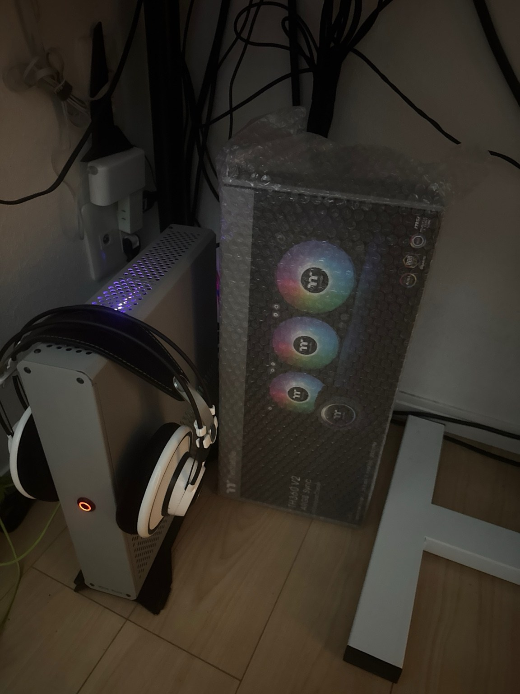
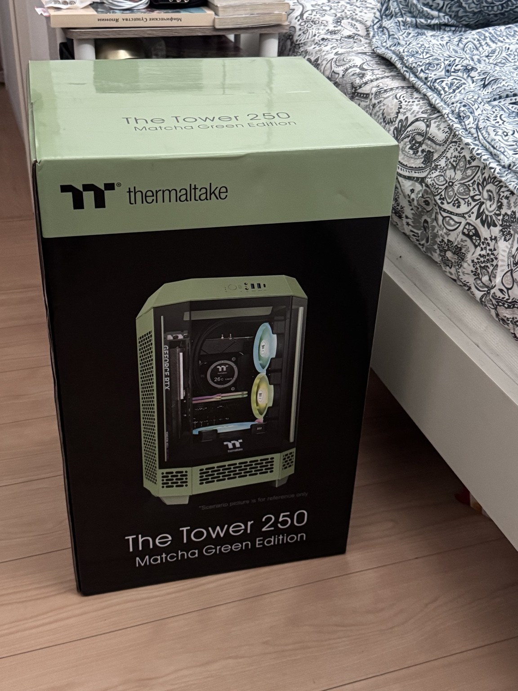
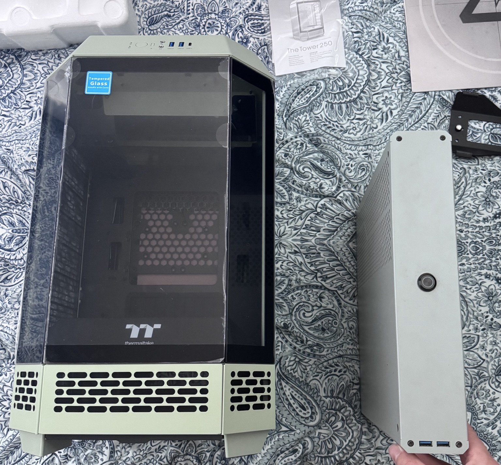
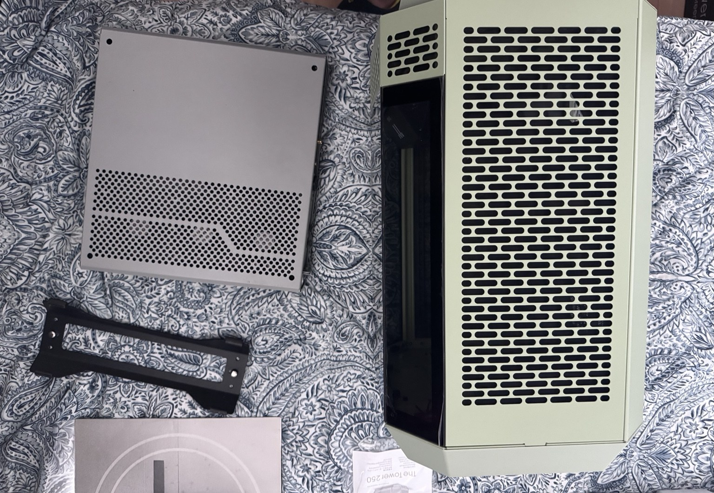
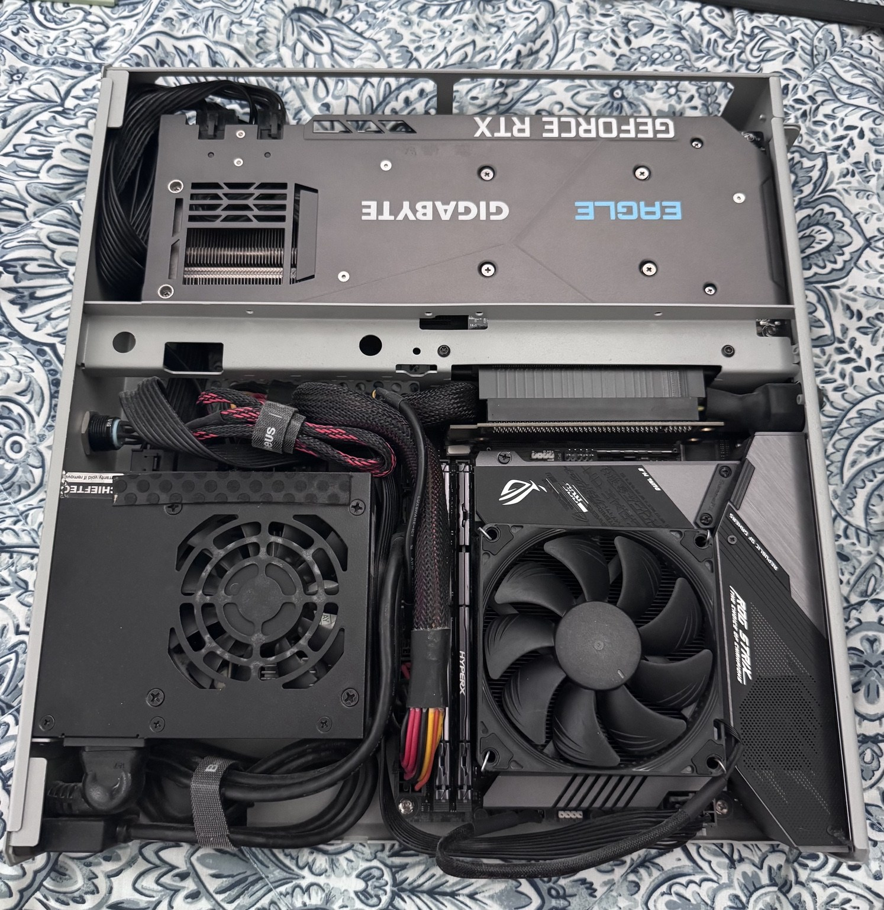

PC Upgrade






The Dr Zaber Sentry 2.0 is compact and reasonably well ventilated, but with powerful hardware inside, the Japanese summer left too little thermal headroom.
I managed to pick up a Thermaltake TH360 V2 ARGB Sync 360 mm AIO at auction for ¥7,000. The problem was obvious: the radiator itself is larger than the Sentry 2.0 chassis, so upgrading the cooler also meant changing the case.
I went with the Thermaltake The Tower 250 Matcha Green Edition. It is much larger than the Sentry 2.0, but it can accommodate the 360 mm radiator properly and gives the components far more room to breathe.
After moving the hardware, rerouting the cables and rebuilding the cooling setup, the PC ended up looking completely different — and with a lot more cooling reserve for the Japanese summer.